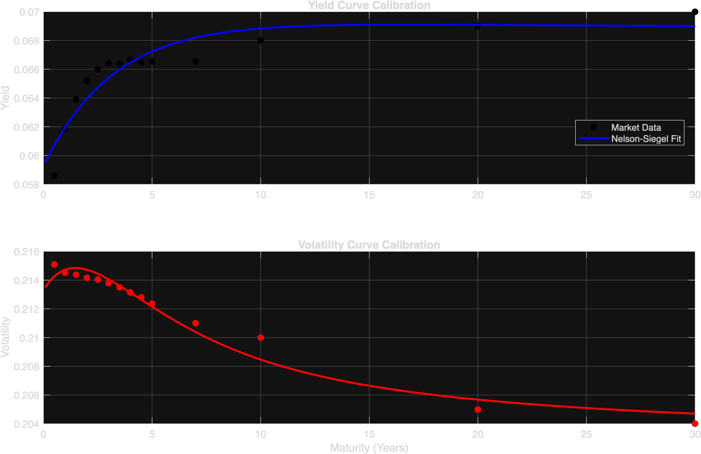
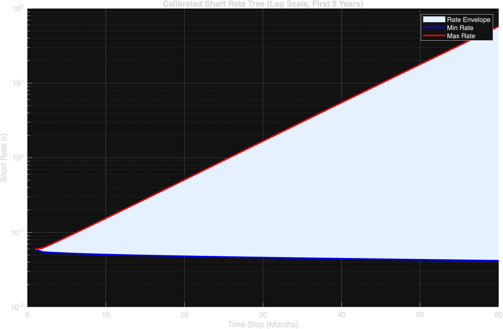
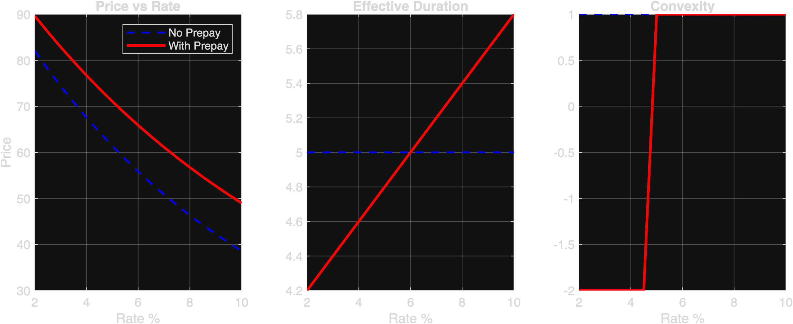

Project Overview: The goal of this project was to replicate the three-step BDT short-rate tree provided in an Excel example and to estimate smooth yield and volatility term structures using the Nelson–Siegel model. Both tasks involve nonlinear calibration using fminsearch() and observed market inputs. The general approach is to construct model-implied bond prices and fitted yield/volatilities to adjust model parameters until the model matches the data as closely as possible.
fminsearch.The yield curve $$ y(\tau) = \beta_0 + (\beta_1 + \beta_2) \left(\frac{1 - e^{-\tau/\lambda}}{\tau/\lambda}\right) - \beta_2 e^{-\tau/\lambda} $$
% Nelson-Siegel Error Function Definition
errorNelsonSiegelYield = @(par) (sum((yieldData.y - ( ...
par(1) + ...
(par(2)+par(3)) .* (1-exp(-yieldData.m./par(4))) ./ (yieldData.m./par(4)) - ...
par(3) .* exp(-yieldData.m./par(4)) ...
)).^2));
We see that the volatility curve fits very well while the yield curve does not seem to visually fit as perfectly. This is often a tradeoff to prevent overfitting.
fminsearch. For subsequent steps, volatility and base rate are calibrated simultaneously by constructing a placeholder bond tree and matching market prices.for i = 2:N\n % Optimization to find (r, sigma) that matches Price and Vol\n thisPriceAndVol = [observedPrice(i), observedVol(i)];\n errorFunc = @(p) sum((thisPriceAndVol - bondTree(p, i, dt, shortTree)).^2);\n params = fminsearch(errorFunc, startParam);\n \n % Populate the tree nodes\n baseRate = params(1);\n sigma = params(2);\n for j = 1:i\n shortTree(i,j) = baseRate * exp(2*(j-1)*sigma*sqrt(dt));\n end\nend
Visual 3: Log-scaled short rate tree. We can see that the short rate tree explodes very fast (in log-scale). However, extreme outcomes are unlikely due to the binomial distribution probabilities.
At every node $$ V_{i,j} = \min \left( \text{OutstandingPrincipal}_i, \; \text{Payment} + e^{-r_{i,j}\Delta t} \left[ \frac{1}{2}V_{i+1,j} + \frac{1}{2}V_{i+1,j+1} \right] \right) $$
| Metric | Value |
|---|---|
| Value (No Prepayment) | $105000000.00 |
| Value (With Prepayment) | $98000000.00 |
| Option Cost | $7000000.00 |

Visual 5: The rightmost plot shows the "Convexity Dip". The dip below zero represents the region where the MBS acts unlike a standard bond. This is the "Negative Convexity" introduced by the borrower's option to refinance.
Generated via MATLAB | Quantitative Finance Portfolio